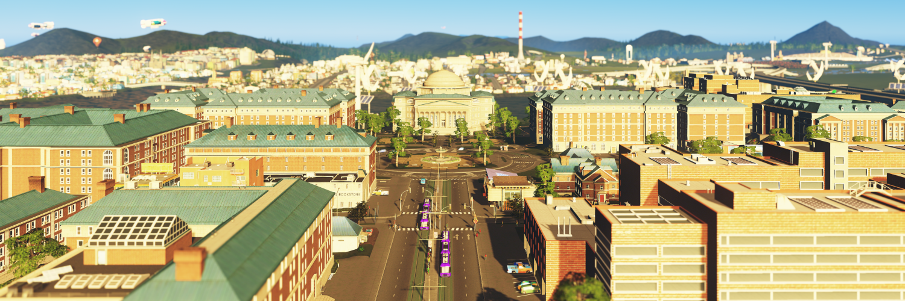
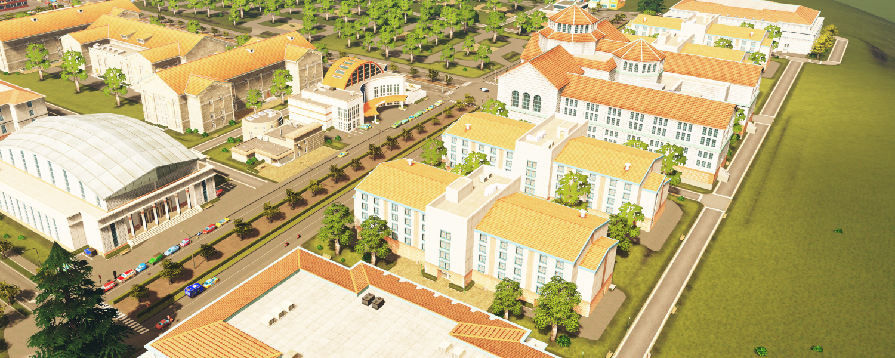
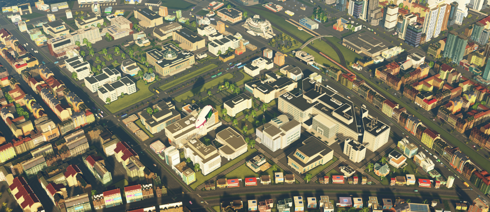

City of Avelburg Tourism - Universities
Avelburg is home to three storied higher education centers. Both prospective students and visitors are welcome to tour campus or come to a sports event! Each university has its own culture and history, and each is proud to welcome students from around the globe.

Primrose University
The biggest institution in Avelburg, Primrose University is the eponymous center of University City, just across the river from Uptown Avelburg. While PrimU has some of the best law, engineering, and medical programs in the country, they're perhaps best known for their storied sports programs, who consistently dominate their conferences season after season.
Avelburg Arts College
Avelburg Arts College is the private institution located near the North Hills university. Its iconic red brick roofs are just one of the things that makes this university famous - its teaching and arts programs are second to none. While sports aren't exactly a big deal here, the campus makes up for it by its beauty and seclusion, making it easy to focus on your studies.
Holly Polytechnic Institute
Holly Poly, as the students affectionally call it, is nestled between uptown and downtown Avelburg, in the bustling city center. Its buildings stand out from the classic modular brick buildings of the neighborhoods surrounding it. For those looking into the more practical endeavors, this is the best place to be. With the limited space and the cirriculum-focused budget, the school only has one sports program: the venerated Holly Poly Spartan basketball team.
